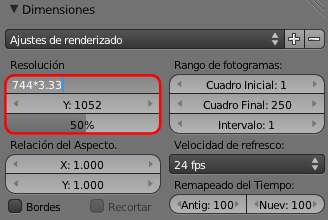
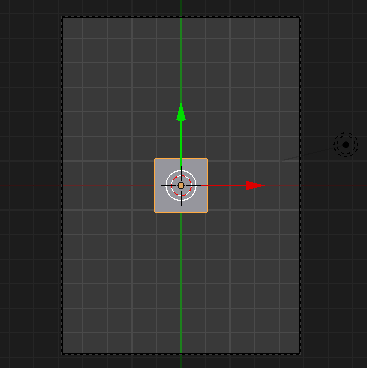
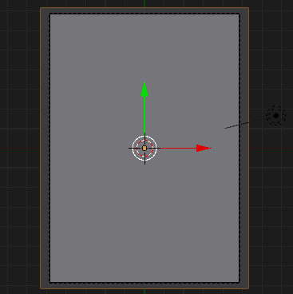
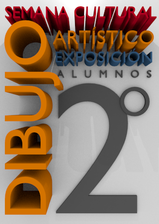

Material didáctico: Cartel anunciador

Llega la Semana Cultural y habrá una exposición con los trabajos que han realizado unos alumnos de 2º de Bachillerato de Artes en la asignatura de Dibujo Artístico.
Comenzamos nuestro trabajo determinando el tamaño necesario para que el render se imprima correctamente una vez realizado. Partimos del supuesto de que se imprimirá en una DIN-A3 (210x297mm); no nos ponemos quisquillosos aquí con los márgenes de seguridad, sangrías y asuntos similares. Como Blender no trabaja en milímetros hay que pasar esas medidas a píxeles sabiendo que 90px equivalen a 25.4mm. Por lo tanto escogemos para Resolución X: 744 y Resolución Y: 1052
Sin embargo eso no es suficiente para imprimir porque mientras que en el monitor la resolución es de 90ppp (puntos por pulgada) en la imprenta necesitamos 300ppp; es decir 3.33 veces más.
Los campos en los que se introducen datos en Blender admiten hacer operaciones matemáticas. Accedemos a Resolución X con un clic y en el interior multiplicamos su valor por 3.33.
Hacemos lo mismo con resolución Y. Nos quedaran unos valores finales de Resolución X: 2478 y Resolución Y: 3503. Este es un render bastante grande. No olvidaremos bajar el valor del porcentaje del render en las pruebas, pero el render final estará al 100%.
Preparamos el encuadre. Nos situamos en el punto de vista desde arriba con "NumPad 7" y llevamos la cámara a ese punto de vista con "Control_Alt_NumPad 0".
Eliminamos el cubo y lo sustituimos por un plano (Añadir/Malla/Plano) que escalamos para que sobrepase los límites de la cámara.
Nos vamos a limitar a usar la fuente Bfont. Nosotros proponemos una composición en esta línea en la que tan sólo se han variado los parámetros de Extrusión de cada una de las palabras así como el espacio entre los caracteres para ayudar a igualar algunos anchos.
No olvidaremos, si lo consideramos oportuno, convertir en mallas los objetos de texto y eliminar todos los puntos dobles.